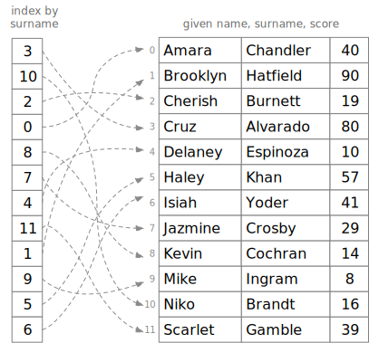

Exercises#
Consider a function to remove duplicates from a list. Our first (incorrect) attempt might be something like this:
def unique_elements(lst: list[int]) -> list[int]:
"""INCORRECT algorithm --- crashes with index error"""
for i in range(len(lst)):
for j in range(i+1, len(lst)):
"""Remove any duplicate elements"""
if lst[i] == lst[j]:
lst.pop(j)
return lst
This function has at least two errors. First, it is modifying list
lst, a violation of the contract given in its header and
docstring. From the function header and docstring, we should expect
it to leave lst unchanged. But even if we modified its docstring
to say that it removed duplicates from lst, it would still fail
with an index error. Can you see why?
A second attempt might build up a copy of only the unique elements. This function works correctly, but it is not an efficient solution.
def unique_elements(lst: list[int]) -> list[int]:
"""Works, but quadratic complexity ... make it linear"""
result = []
for i in range(len(lst)):
# Copy only the *last* instance
if lst[i] not in lst[i+1:]:
result.append(lst[i])
return result
At a glance you might expect this to be a linear time algorithm,
relative to the length of lst. There is only one loop, right?
But it is actually a quadratic time
algorithm. Can you see why?
Write a version of unique_elements that requires time linear in
the length of lst. Hint: Adding and checking elements in a set
or dict data structure are constant time operations.
Bonus puzzle with additional Python goodies: Suppose we did want to remove duplicates from the list, rather than returning a copy without duplicates. Can you do that in linear time? (My solution to this involves “slice” operations on a list, which you can read about in the Python library documentation for mutable sequences)
Finish function
findby writing a binary search for a list of (key, value) pairs ordered by key. Try to write it without referring back to the binary search function presented in this chapter.
def find(key: str, table: list[tuple[str, int]], failure: int=-1) -> int:
"""Return value associated with key, or failure value (default -1) if key not present.
Table is list of (key, value) pairs, ordered (sorted) by key.
"""
return 0 # FIXME
fruit_calories = [ # Per 100mg serving
("apple", 52),
("figs", 74),
("kiwi", 61),
("papaya", 39),
("plum", 46),
("watermelon", 30)]
cal = find("apple", fruit_calories)
print(f"Apple -> {cal} (expecting 52)")
cal = find("kiwi", fruit_calories)
print(f"Kiwi -> {cal} (expecting 61)")
cal = find("papaya", fruit_calories)
print(f"Papaya -> {cal} (expecting 39)")
cal = find("watermelon", fruit_calories)
print(f"Watermelon -> {cal} (expecting 30)")
cal = find("aardvark", fruit_calories)
print(f"Aardvark -> {cal} (expecting -1)")
cal = find("grape", fruit_calories)
print(f"Grape -> {cal} (expecting -1)")
cal = find("zzz", fruit_calories)
print(f"zzz -> {cal} (expecting -1)")
Sometimes we want to prepare for binary search, but we can’t put the items we wish to search into sorted order. for example, we might want to search by more than one criterion, like searching a table of names by either given name (“first name” in English) or surname (“last name” in English). Then, instead of sorting the list itself, we can make a sorted index as an auxillary structure. For example, suppose we have the following table of game scores, ordered by given name:
scores = [['Amara', 'Chandler', 40],
['Brooklyn', 'Hatfield', 90],
['Cherish', 'Burnett', 19],
['Cruz', 'Alvarado', 80],
['Delaney', 'Espinoza', 10],
['Hayley', 'Khan', 57],
['Isiah', 'Yoder', 41],
['Jazmine', 'Crosby', 29],
['Kevin', 'Cochran', 14],
['Mike', 'Ingram', 8],
['Niko', 'Brandt', 16],
['Scarlet', 'Gamble', 39]
]
then an auxillary index by surname might be
surname_index = [3, 10, 2, 0, 8, 7, 4, 11, 1, 9, 5, 6]
which indicates that the name that is first by surname is “Cruz Alvarado”, in position 3, followed by “Niko Brandt” in position 10, then “Cherish Burnett” in position 2, and so on.

Database systems do something like this, although they use a different structure (a tree rather than a list) for each auxillary index.
Now suppose we want to search a list with an auxillary index. We
could pass a function for extracting the search key field from each
row, like the key argument to the sort and sorted built-in
functions, but for the sake of this exercise we’ll just pass a
column index.
We can then write a binary search function using the auxillary index:
def indexed_search(key: str, values: list[list], aux_index: list[int], key_column: int) -> list:
"""Returns row in values such that row[key_column] == key, if there is any such row, otherwise [].
Requires aux_index be a list of indices of values ordered by values in key_column.
"""
return [] # FIXME
print(f"Yoder -> {indexed_search('Yoder', scores, surname_index, 1)}")
print(f"Hatfield -> {indexed_search('Hatfield', scores, surname_index, 1)}")
print(f"Espinoza -> {indexed_search('Espinoza', scores, surname_index, 1)}")
print(f"Smith -> {indexed_search('Smith', scores, surname_index, 1)}")
The output we expect is
Yoder -> ['Isiah', 'Yoder', 41]
Hatfield -> ['Brooklyn', 'Hatfield', 90]
Espinoza -> ['Delaney', 'Espinoza', 10]
Smith -> []
Solutions#
Extract unique elements from a list. The first version given above crashes with an index error because
lst.pop(i)makes the list shorter. The second version is quadratic time because, even though only one loop is visible in our code, theininif lst[i] not in lst[i+1:]is actually a loop. To do better, we need to use only constant time operations within the loop. Adictorsetcan provide the constant time operations we need. As thedictstructure may be more familiar, I’ll give that version first:
def unique_elements(lst: list[int]) -> list[int]:
"""Linear time algorithm"""
seen = {} # Elements we have already seen
result = []
for i in range(len(lst)):
if lst[i] not in seen:
result.append(lst[i])
seen[lst[i]] = True
return result
uniq = unique_elements([1, 2, 7, 2, 3, 2, 7])
print(uniq)
[1, 2, 7, 3]
When we only care about whether an element is in the dict, rather
than associating a value we need with each element, we can use a
set instead of a dict:
def unique_elements(lst: list[int]) -> list[int]:
"""Linear time algorithm"""
seen = set() # Elements we have already seen
result = []
for i in range(len(lst)):
if lst[i] not in seen:
result.append(lst[i])
seen.add(lst[i])
return result
uniq = unique_elements([1, 2, 7, 2, 3, 2, 7])
print(uniq)
[1, 2, 7, 3]
Bonus puzzle: Removing duplicates in linear time. We haven’t
studied “slicing” lists, but the Python standard library
documentation (you do have it bookmarked, right?) describes
operations on slices like lst[i:j]. Assigning to a slice of a
list requires linear time in the length of that list. A constant
number of linear time operations is still linear time. We can reuse
the unique_elements function we have already written and combine
it with a couple of slice assignments to get a 1remove_duplicates`
function that works in linear time:
def remove_dups(lst: list[int]):
"""Remove duplicate elements from lst"""
uniques = unique_elements(lst) # Linear time
lst[0:len(uniques)] = uniques # Linear time
lst[len(uniques):] = [] # Linear time
# Doing 3 linear time operations is still linear time!
l = [1, 2, 7, 2, 3, 2, 7]
remove_dups(l)
print("Transmogrified")
print(l)
Transmogrified
[1, 2, 7, 3]
Binary search in a list of (key value) pairs.
def find(key: str, table: list[tuple[str, int]], failure: int=-1) -> int:
"""Return value associated with key, or failure value (default -1) if key not present.
Table is list of (key, value) pairs, ordered (sorted) by key.
"""
low = 0
high = len(table) - 1
while low <= high:
mid = (low + high) // 2
k, v = table[mid]
if key == k:
return v
if key < k:
high = mid - 1
else:
low = mid + 1
return failure
fruit_calories = [ # Per 100mg serving
("apple", 52),
("figs", 74),
("kiwi", 61),
("papaya", 39),
("plum", 46),
("watermelon", 30)]
cal = find("apple", fruit_calories)
print(f"Apple -> {cal} (expecting 52)")
cal = find("kiwi", fruit_calories)
print(f"Kiwi -> {cal} (expecting 61)")
cal = find("papaya", fruit_calories)
print(f"Papaya -> {cal} (expecting 39)")
cal = find("watermelon", fruit_calories)
print(f"Watermelon -> {cal} (expecting 30)")
cal = find("aardvark", fruit_calories)
print(f"Aardvark -> {cal} (expecting -1)")
cal = find("grape", fruit_calories)
print(f"Grape -> {cal} (expecting -1)")
cal = find("zzz", fruit_calories)
print(f"zzz -> {cal} (expecting -1)")
Apple -> 52 (expecting 52)
Kiwi -> 61 (expecting 61)
Papaya -> 39 (expecting 39)
Watermelon -> 30 (expecting 30)
Aardvark -> -1 (expecting -1)
Grape -> -1 (expecting -1)
zzz -> -1 (expecting -1)
Binary search with an auxillary index.
scores = [['Amara', 'Chandler', 40],
['Brooklyn', 'Hatfield', 90],
['Cherish', 'Burnett', 19],
['Cruz', 'Alvarado', 80],
['Delaney', 'Espinoza', 10],
['Hayley', 'Khan', 57],
['Isiah', 'Yoder', 41],
['Jazmine', 'Crosby', 29],
['Kevin', 'Cochran', 14],
['Mike', 'Ingram', 8],
['Niko', 'Brandt', 16],
['Scarlet', 'Gamble', 39]
]
surname_index = [3, 10, 2, 0, 8, 7, 4, 11, 1, 9, 5, 6]
def indexed_search(key: str, values: list[list], aux_index: list[int], key_column: int) -> list:
"""Returns row in values such that row[key_column] == key, if there is any such row, otherwise [].
Requires aux_index be a list of indices of values ordered by values in key_column.
"""
low = 0
high = len(aux_index) - 1
while high >= low:
mid = (high + low) // 2
row = values[aux_index[mid]]
row_key = row[key_column]
if key == row_key:
return row
if key < row_key:
high = mid - 1
else:
low = mid + 1
return []
print(f"Yoder -> {indexed_search('Yoder', scores, surname_index, 1)}")
print(f"Hatfield -> {indexed_search('Hatfield', scores, surname_index, 1)}")
print(f"Espinoza -> {indexed_search('Espinoza', scores, surname_index, 1)}")
print(f"Smith -> {indexed_search('Smith', scores, surname_index, 1)}")
Yoder -> ['Isiah', 'Yoder', 41]
Hatfield -> ['Brooklyn', 'Hatfield', 90]
Espinoza -> ['Delaney', 'Espinoza', 10]
Smith -> []